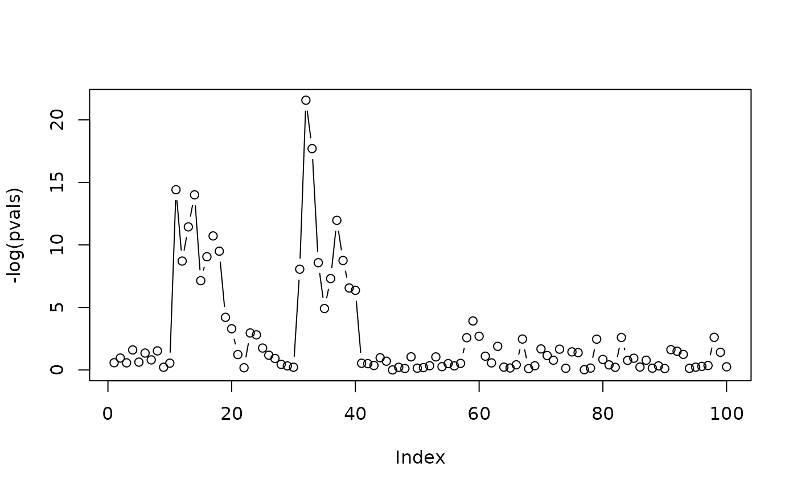

Generate one-sided p-values associated to a given signal with equi-correlated noise
Source:R/tree-simulation-functions.R
gen.p.values.RdGenerate one-sided p-values associated to a given signal with equi-correlated noise
Examples
m <- 100
s <- 10
K1 <- floor(m/(s * 4))
d <- 1
barmu <- 4
dd <- dyadic.from.window.size(m, s, method = 2)
leaf_list <- dd$leaf_list
mu <- gen.mu.leaves(m = m, K1 = K1, d = d, grouped = FALSE,
setting = "const", barmu = barmu, leaf_list =leaf_list)
pvals <- gen.p.values(m = m, mu = mu, rho = 0)
plot(-log(pvals), t = 'b')
